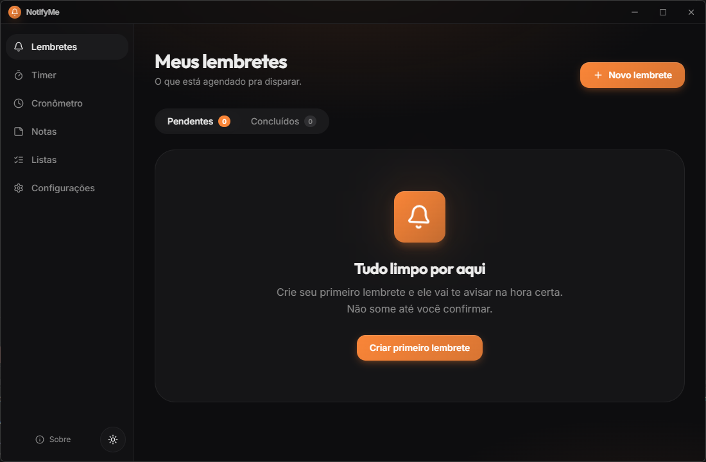
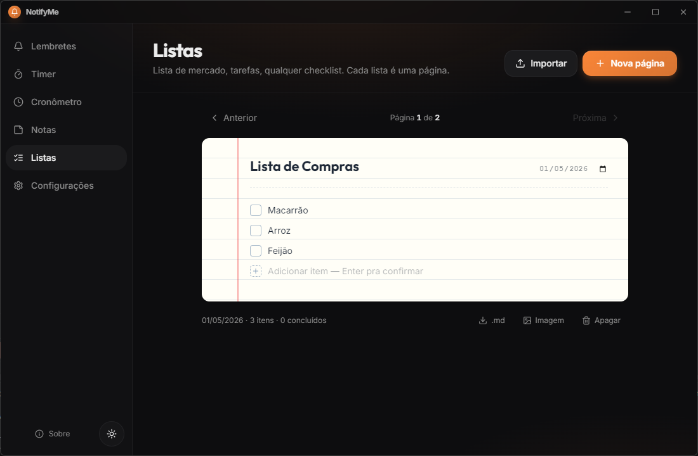
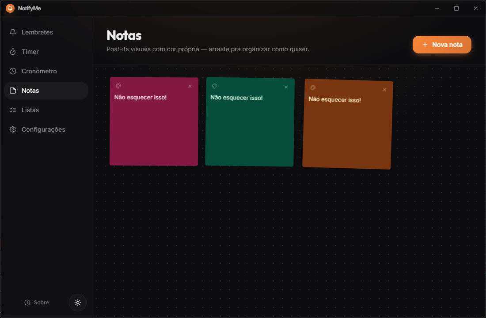
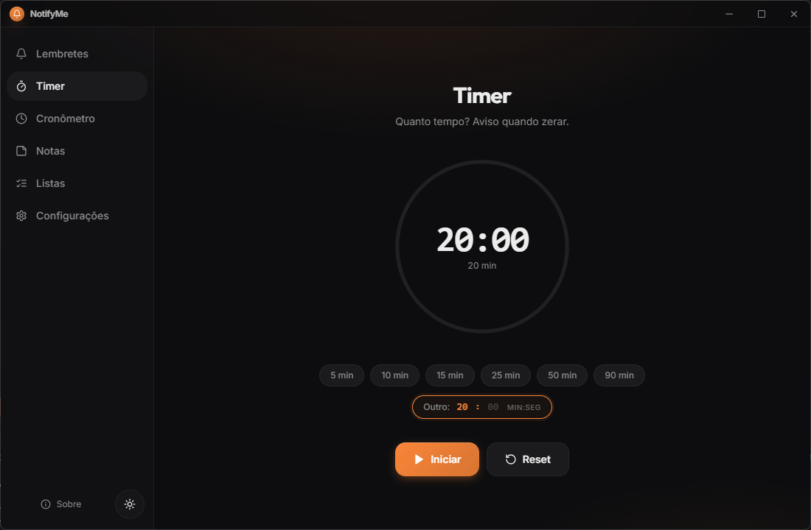
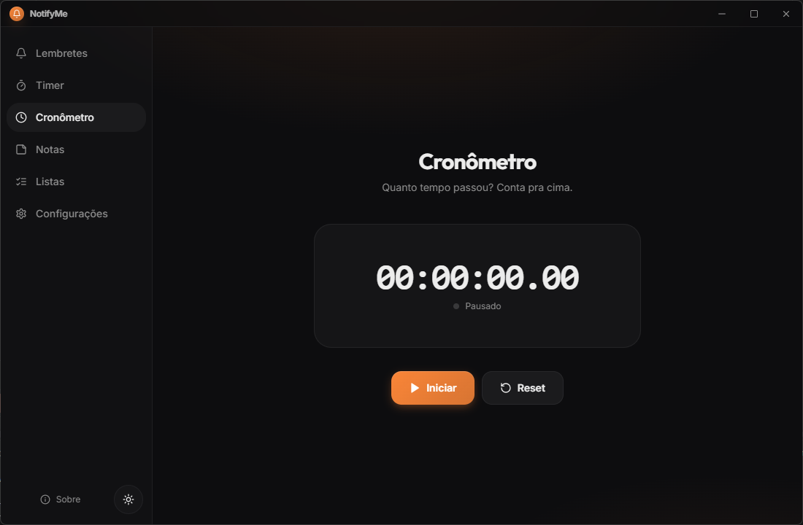
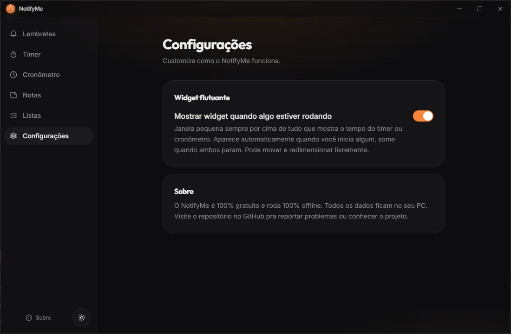

Lembretes que não somem
Janela always-on-top sem botão de fechar. Só "Concluído" ou "Adiar 10 min".
- Recorrência: uma vez, todo dia, toda semana
- Estado "atrasado" destacado em vermelho
- Visual glassmorphism estilo macOS Sequoia
Notificações nativas do Windows desaparecem em 5 segundos. Pra coisa importante, isso não serve. NotifyMe tem lembretes persistentes, listas de tarefas, Pomodoro e cronômetro — tudo num app só.
Lembretes, listas, notas, Pomodoro e cronômetro — integrados, leves, sempre na bandeja.
Janela always-on-top sem botão de fechar. Só "Concluído" ou "Adiar 10 min".
Páginas estilo caderno pautado com itens checáveis. Uma lista por dia, navegação fluida entre páginas.
Anotações rápidas em cartões coloridos arrastáveis. Cada nota tem cor própria — organize visualmente como quiser.
Presets de 5, 10, 15, 25, 50 e 90 minutos ou tempo personalizado de 1 a 999 min.
Contagem progressiva com precisão de centésimos de segundo.
Quadro estilo Trello com colunas customizáveis e drag-and-drop. Próxima ferramenta a entrar no app.
Coisas que você não percebe, mas sente no dia a dia.
Roda discreto na bandeja do sistema. Lembretes disparam mesmo com janela fechada.
Liga junto com o sistema. Você nunca esquece de abrir o app de novo.
Toggle no app. Detecta sua preferência do sistema no primeiro boot.
Sem barra cinza nativa do Windows. Visual limpo estilo macOS, do hero ao rodapé.
Dados em %APPDATA%\notifyme. Zero login, zero servidor, zero rastreio.
~40KB de Renderer, ~12KB de Main. Inicia rápido, consome quase nada de RAM.
Stack pequena, escolhas conservadoras. O que importa: o app abre rápido e funciona.
Capturas reais do app. Tudo com a mesma linguagem visual: glassmorphism, cantos arredondados, laranja vibrante.

Crie quantos lembretes quiser, com hora, descrição e recorrência. Quando dispara, abre uma janela always-on-top sem botão de fechar — só "Concluído" ou "Adiar 10 min". Esquecer não é mais opção.

Cada lista é uma página estilo folha pautada, com data, título e itens checáveis. Navegue entre páginas como num caderno físico. Mercado, tarefas, viagem — tudo organizado por dia.

Pra aquela ideia rápida que você quer ver enquanto trabalha. Cada nota tem sua cor — organize visualmente como num quadro de cortiça. Arraste, redimensione e posicione livre no canvas.

Presets de 5, 10, 15, 25, 50 e 90 minutos ou tempo personalizado de 1 a 999 minutos. Display circular com progress ring que esvazia conforme o tempo passa. Som ao zerar gerado via Web Audio API — sem arquivo externo.

Cronometragem progressiva com precisão de centésimos de segundo.
Usa Date.now() em vez de acumular ms — assim não erra mesmo
rodando por horas. Continua contando minimizado.

Uma janelinha always-on-top mostra o timer ou cronômetro rodando, mesmo com o app minimizado ou outra janela em foco. Aparece automático quando algo está ativo, some quando ambos param.
Disponível pra Windows 10 e 11. Instalador NSIS ou versão portable (single file, roda sem instalar). Tudo via GitHub Releases.
O instalador não é assinado digitalmente — o Windows pode mostrar um aviso do SmartScreen. Clique em "Mais informações" → "Executar mesmo assim". Código aberto, pode auditar antes.
O NotifyMe é grátis pra sempre. Mas se ele te ajuda no dia a dia, considere uma contribuição.
Qualquer valor ajuda a manter o projeto vivo, pagar domínio e incentivar novas features. Chave PIX (CNPJ):
65.516.621/0001-78